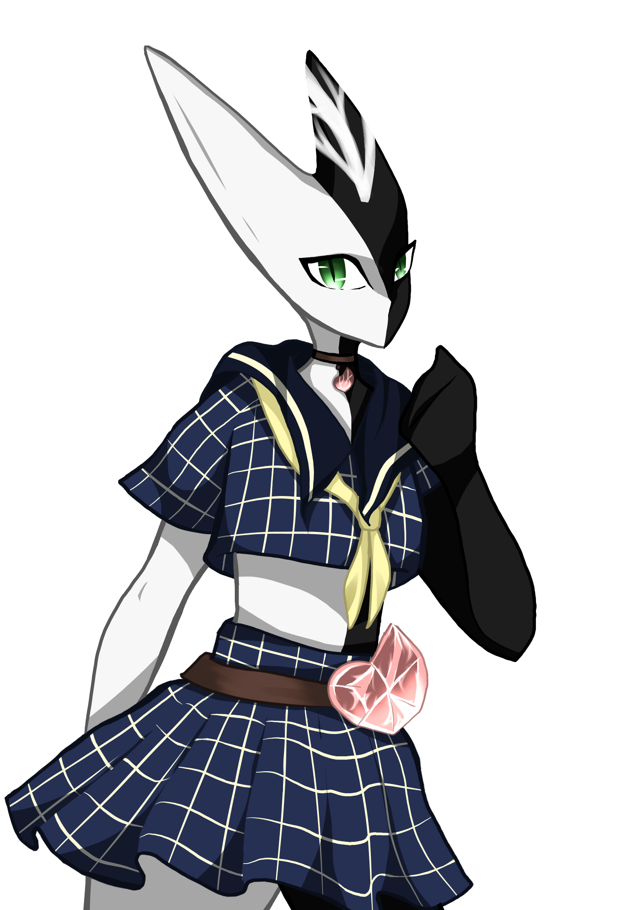

Characters
Main Character
The MC finds themselves in a world unknown to them.
They want to find a way back to their homeland and regain their lost memories.
That's not really easy in a world where monsters and humans are at war.
Their appearance is up to the players imagines.
What influence will their decisions have on the future?

Vita
Vita is cat-boy and a member of the organisation "Shelter".He's the first Character the player meets.
His blond medium long hair is tied in a man-bun
One of his wishes is for the war to end, so that everyone could have a normal life again.

Steak
Steak is the leader and founder of the organisation "Shelter".Her Skin is white on the left side and black on the other side.
She has two horns and green eyes.
She founded the organisation to help those who don't want to be involved with the ongoing war